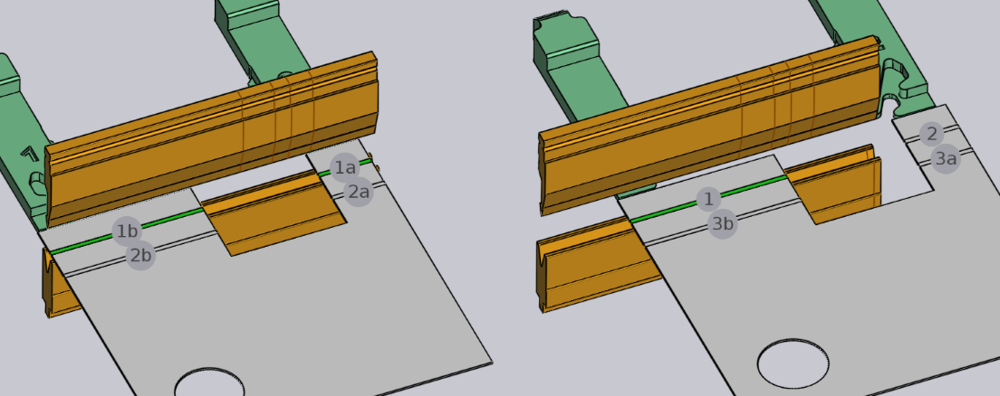

Redigér en bukning
De grundlæggende indstillinger for en bukning kan ses og redigeres ved brug af panelet Bukning. For at åbne bukningspanelet for en bestemt bukning:
-
Klik på en bukning i bukningsnavigatoren for at vælge bukningen.
-
Klik igen på den samme bukning for at åbne bukningspanelet for at redigere denne bukning.
En alternativ metode:
-
Ctrl+Klik på en bukning i bukningsnavigatoren for at vælge bukningen og for at åbne redigeringspanelet for den bukning.
Bukningspanelet

Bukningspanelet ligner billedet ved siden af. Dette har nogle indstillinger og arbejdsgange med henblik på arbejde med bukningen.
-
Indgangen Position bruges til at flytte bukningen langs maskinen. Værdien vist her er positionen for venstre ende af bukningen på maskinens skala. (Bukningen kan også trækkes for interaktivt at indstille positionen, se afsnittet nedenfor).
-
Listerne Opspænding og Station bruges til at flytte denne bukning til en anden opsætning,[1] eller til en anden station[2] inden for denne opsætning. Disse valg vises kun, hvis delen henholdsvis har flere opsætninger, eller hvis opsætningen har flere stationer. (En bukning kan også flyttes til en anden station ved blot at klikke på emnet og trække det over, indtil det er justeret med en anden station).
-
Knappen Drej bukningsdel bruges til at vende delen (ilægges med den anden side ind i maskinen). Billedet nedenfor viser effekten af at klikke på denne knap (klik på denne knap igen for at genskabe den oprindelige retning):

-
Knappen Klip vises, når der redigeres en bukning med flere spænd (en bukning lavet af to eller flere kollineære bukningstræk). Hvis den grupperede bukning kan kan deles op og bearbejdes som separate bukninger, kan denne knap bruges til at opdele denne bukning i to separate. Billedet nedenfor viser, hvordan bukning 1 (vist som 1a og 1b i opdelingstilstand) opdeles i bukning 1 og 2 efter opdeling:
 -
Linket Vinkelmåling bruges til at vise vinkelmålingspanelet for denne bukning. Denne knap er kun synlig, hvis en eller flere vinkelmålingsmetoder er tilgængelige for den valgte maskine.
-
Knappen Spring bukning over bruges til at informere TecZone Bend om ikke at bearbejde netop denne bukning. Dette er nyttigt til at markere nogle bukninger som værende bearbejdet med en anden teknologi end afkantningsmaskinen (for eksempel en stanse eller en drejebukkemaskine).[3]
-
Aktivér feltet Prægebukning for at informere om TecZone Bend at bruge en prægebukning. Er kun muligt, hvis en prægning ville være mulig (typisk betyder dette, at der er en prægeduelig stanse og matrice, der kan bruges). Prægebukning kræver mere trykkraft, men kan resultere i en strammere bukningsradius end en luftbukning er i stand til. Prægebukning kræver også, at man har en stanse og en matrice med den nøjagtige vinkel, der er nødvendig for denne bukning.
-
Aktivér optionen Forbukning for at opdele denne bukning i to separate arbejdsgange — en forbukning og en afsluttende bukning. Som standard vil TecZone Bend flytte den afsluttende bukning til en position, der ligger lige efter den næste bukning i rækkefølgen. Se afsnittet nedenfor for mere om brug af en forbukning.[4]
-
Brug knapperne Tilbage og Videre skifte gennem redigering af de forskellige bukninger i delen.
Avancerede arbejdsgange
Her er nogle mere avancerede arbejdsgange, der kan gøres med en bukning.
Brug af en forbukning
Nogle typer kollisioner kan undgås ved at opdele en bukning i en forbukning og en afsluttende bukning. Her er et simpelt eksempel:

Delen ovenfor har to bukninger, og på den anden bukning støder delen sammen med matriceskinnen. Dette kan ikke løses ved at ændre på rækkefølgen. En mulig løsning er at introducere en forbukning ved bukning 1, ved at vælge bukning 1 og aktivere Forbukning feltet.

Som det kan ses på billedet opdeler det bukning 1 i en forbukning og en afsluttende bukning (som nu bliver til bukning 3). Ikonerne på bukningsnavigatoren angiver nu, at bukning 1 er en forbukning, mens bukning 3 er en afsluttende bukning. Indtastningsfeltet Forbukningsvinkel kan bruges til at finjustere vinklen på forbukningen. I dette eksempel er vinklen sat til 120, så delen bukkes fra flad tilstand (180 grader indvendig vinkel) til 120 grader i første trin, og derefter til 90 grader i andet trin. Under bearbejdningen af bukning 2 er den første flange ikke fuldt bukket, og undgår således en kollision med matriceskinnen (billederne nedenfor viser situationen, når bukning 2 og 3 bearbejdes):

Redigering af flere bukninger
Det er muligt at redigere flere bukninger på samme tid. Sådan gøres det:
-
Klik på en bukning i bukningsnavigatoren for at vælge den.
-
Hold Shift nede, og vælg yderligere bukninger for at redigere dem alle sammen.

Der vises et redigeringspanel som det ved siden. Her vises nogle redigeringer, der kan udføres på alle bukninger sammen. Derudover viser denne panel eventuelt nogle ekstra knapper:
-
Knappen Gruppér vises, hvis der vælges to eller flere bukninger, der er kollineære og kan grupperes sammen til en enkelt bukning med flere spænd.
-
Knappen Ombyt bukninger. vises, når der vælges præcist to bukninger, og giver mulighed for at bytte de to bukninger i rækkefølgen (dette vises kun, hvis de to bukninger kan byttes i rækkefølgen).
-
Hvis de to bukninger er parallelle, i modsatte retninger, og er i en kort afstand fra hinanden, kan det være muligt at kombinere dem til en enkelt Z-bukning. I dette tilfælde vises knappen Z-bukning.[5]
Træk en bukning
Indtastningsfeltet Position kan bruges til at positionere en bukning præcist. Ofte er det lettere bare at trække en bukning til den krævede position. Sådan gøres det:
-
Sørg for, at panelet bukningsredigering er åbent (ved at klikke to gange på bukningsnummeret).
-
Klik på delen nær bukkekanten, og begynd at trække delen til venstre/højre.
Afhængigt af hvor delen holdes (nær midten af bukkekanten, eller nær venstre/højre kanter), TecZone Bend vil der genereres automatiske snaplinjer , der hjælper med til at positionere bukningen præcist i forhold til en værktøjsstation. Billedet nedenfor viser en bukning, der trækkes ved at holde den nær midten, eller ved at holde den nær venstre kant.

Snaplinjerne i figurerne ovenfor viser, at bukningen er placeret nøjagtigt i midten af værktøjsstationen, eller med venstre kant justeret nøjagtigt med stansen og matricen.